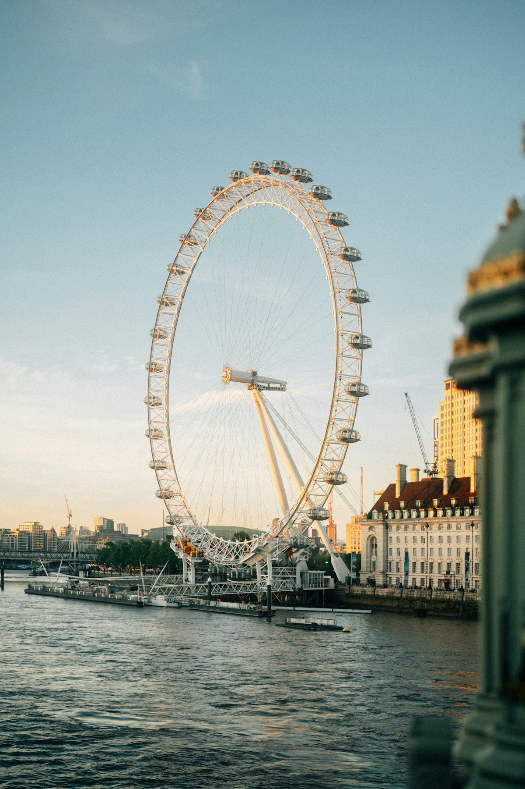
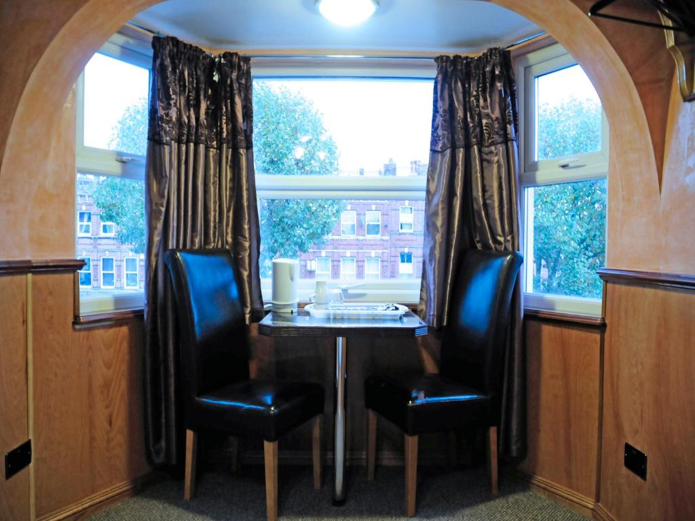
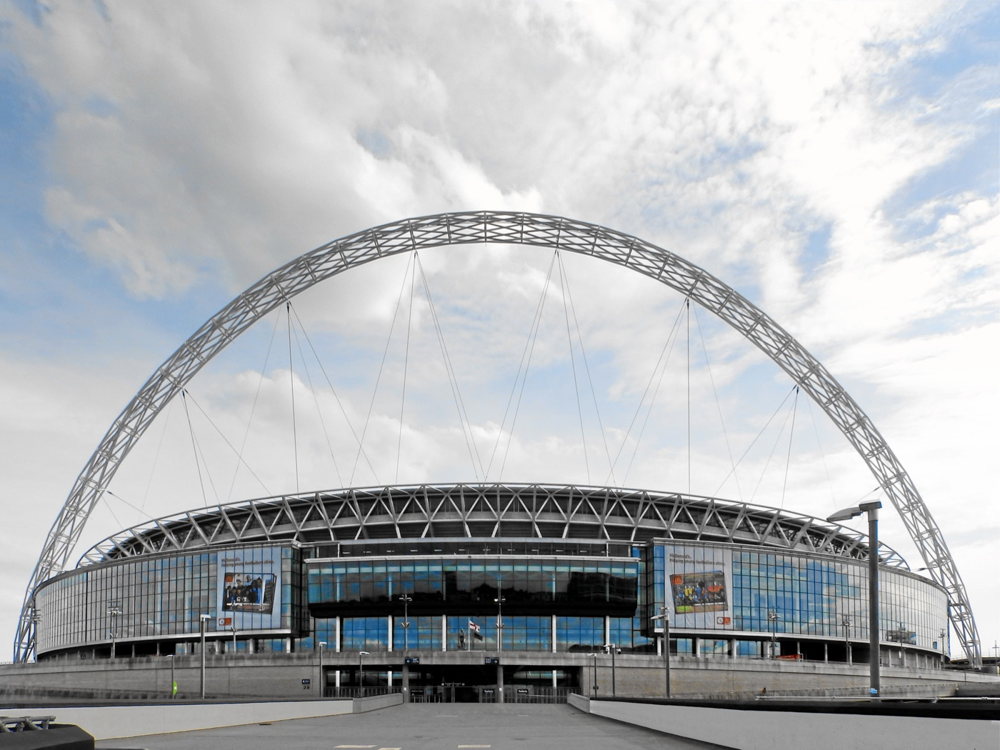
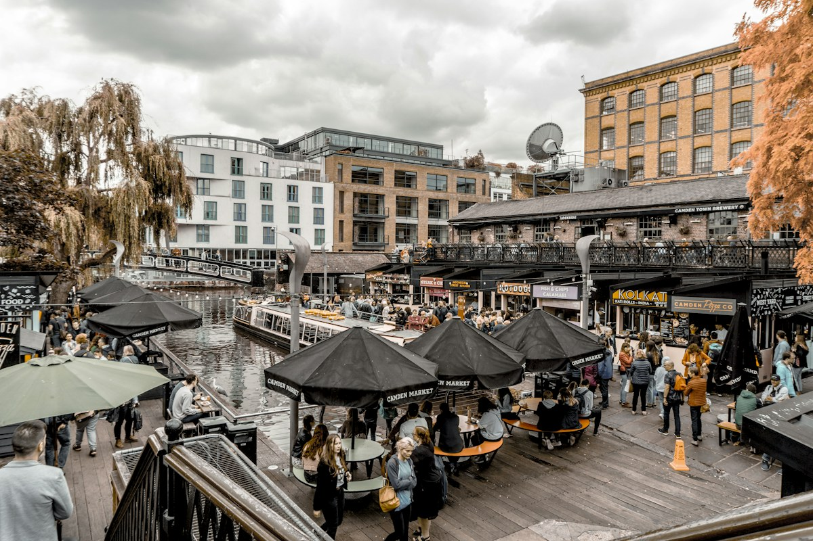

Central LondonLondon EyeUse the Jubilee line to reach Westminster, Waterloo and classic riverside sightseeing.
About
Cricklewood Lodge Hotel is a 32-bedroom hotel on Cricklewood Broadway, London NW2, with practical rooms and easy North West London transport.
The hotel is less than 3 miles from Brent Cross Shopping Centre. Kilburn Underground is around a 10-minute walk away, and Cricklewood railway station is about 950 yards from the property.
Each room includes a flat-screen TV and tea and coffee making facilities, with free WiFi available. The hotel offers Double, Twin, Basic Triple, Family and Single room options.

London Base

Central LondonLondon EyeUse the Jubilee line to reach Westminster, Waterloo and classic riverside sightseeing.

Event TripsWembleyWembley Park is a simple Jubilee line journey from Kilburn Underground.

MarketsCamdenPlan local North London shopping, food and market days before you leave.